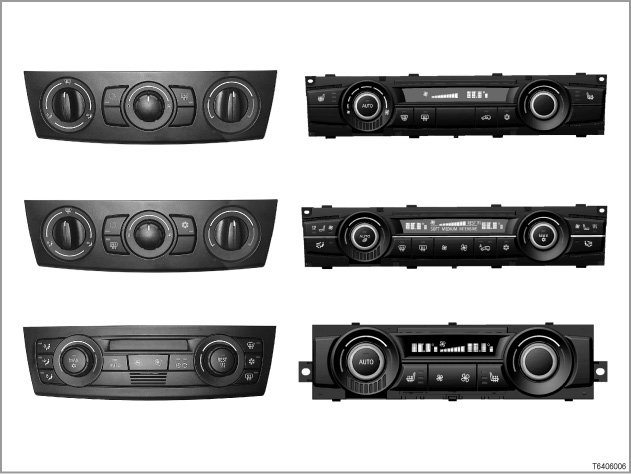
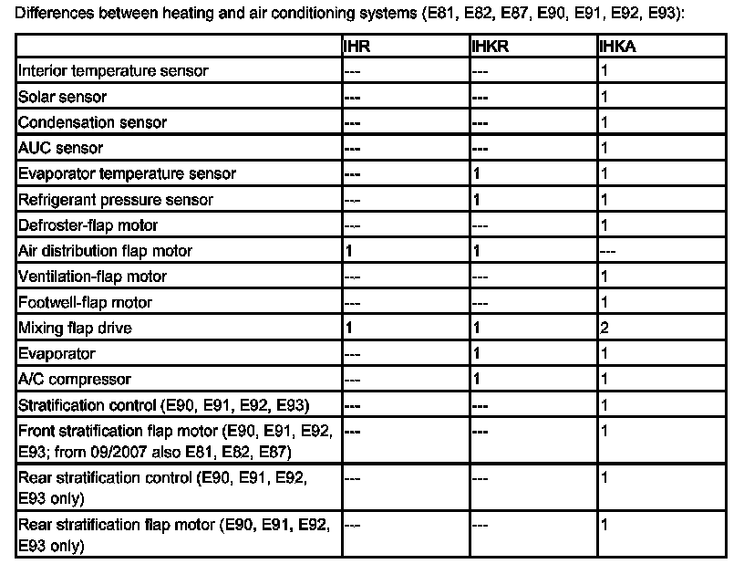
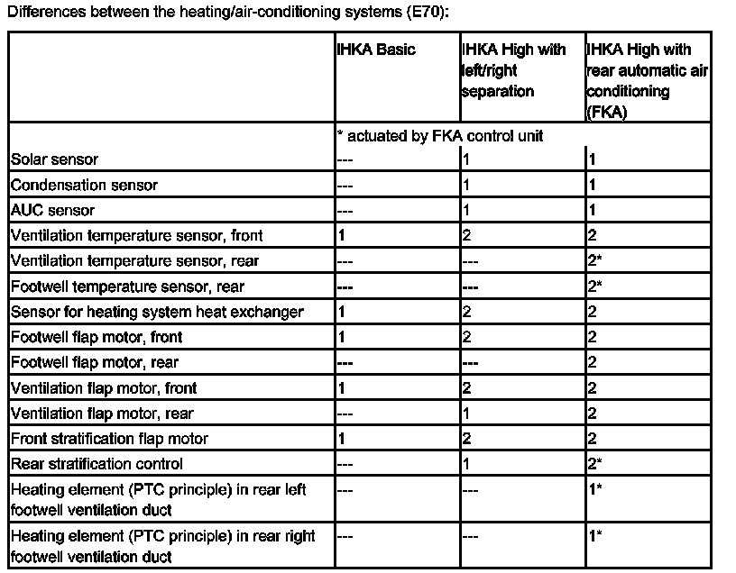

Part 1
64 01 04 (090) Integrated Heating Control And Air-conditioning System

Introduction
In this SBT, the following heating and air-conditioning systems are described:
> E81, E82, E87, E90, E91, E92, E93
- Integrated heating control (IHR)
[System overview ...]
- Integrated heating/air-conditioning regulation (IHKR)
[System overview ...]
- Integrated automatic heating/air-conditioning system (IHKA) with separate settings for driver and front-passenger sides
[System overview ...]
- Overview of IHK, IHKR and IHKA components
[System overview ...]
> E70
- Integrated automatic heating and air-conditioning system (IHKA), Basic
[System overview ...]
- Integrated automatic heating/air-conditioning system (IHKA) High with left/right separation for driver and front-passenger side
[System overview ...]
- Integrated automatic heating/air-conditioning system (IHKA) High with automatic rear air conditioning (FKA) with separate settings for the driver and front passenger and for the left/right sides on rear seats.
[System overview ...]
- Overview of IHKA components in the Basic and High versions
[System overview ...]
IHR, IHKR and IHKA in E81, E82, E87, E90, E91, E92, E93
The IHR, IHKR and IHKA are heating and air conditioning systems that regulate the temperature of the air.
The IHKA has separate settings for the driver's side and passenger side.
> E81, E82, E87
The E81, E82, E87 are equipped as standard with the integrated heating control system (IHR).
The integrated automatic heating/air-conditioning system (IHKA) is available as special equipment (option 534).
- From 12/2004, the integrated heating / air-conditioning regulation (IHKR) is available as special equipment for all four-cylinder models (option 530).
The IKHR is the standard equipment for the six-cylinder models.
> E90, E91, E92, E93
The E90, E91, E92, E93 are equipped as standard with the integrated heating and air-conditioning control (IHKR). The integrated automatic heating/air-conditioning system (IHKA) is available as special equipment (option 534).
New features of the IHR/IHKR/IHKA:
- An electric auxiliary heater working on the PTC principle (positive temperature coefficient) is installed on vehicles with diesel engines.
The electric auxiliary heater is a separate component and is installed in the heater/air conditioner. The electric auxiliary heater consists of electrically heated heating chains. Air is heated directly by these heating chains and is then fed through the air vents into the vehicle interior. In principle, the electric auxiliary heater works like an electric radiator.
The electric auxiliary heater accelerates the heating of the vehicle interior, especially at low ambient temperatures and during the cold-start phase.
- LIN bus (Local Interconnect Network bus)
A LIN bus serves to actuate flap motors and the electric auxiliary heater in the heating/air-conditioning system.
- Convertible program (E93 only)
When the convertible top is opened and the air-conditioning system is in automatic mode, the convertible program is automatically activated.
The convertible program adapts the air-conditioner settings (blower, airflow, temperature) to the conditions created by the open top. The settings do not have to be changed when the top is opened or closed.
The convertible program is stored in the IHKA control unit.
- Air distribution flap motor and microswitch (IHR, IHKR only)
The air distribution flap motor replaces the mechanical actuation of the central kinematics with a cam disc. The central kinematics are still used to mechanically adjust the air distribution flaps. Air distribution (defrost, ventilation, footwell) is selected with the air-distribution control wheel in the IHR/IHKR control panel.
The microswitch records the current position of the cam disc and thus the position of the air distribution flap motor.

Integrated automatic heating and air-conditioning system (IHKA) in the E70
The integrated automatic heating/air-conditioning system (IHKA) on the E70 is a HEATING and air conditioning system that regulates the temperature of the water.
The E70 is equipped as standard with the IHKA Basic. The Basic version does not provide for separate settings for the driver and front-passenger sides.
The IHKA High with separate settings for the driver and front-passenger sides is available as special equipment (option 534).
The automatic rear air conditioner (FKA) available as special equipment (option 4NB).
An auxiliary heating/ventilation system is available as special equipment for the 3rd row of seats (option 4NC).
New features on IHKA High:
- Integrated automatic heating and air-conditioning system (IHKA) High with automatic rear air conditioning (FKA)
In addition to the separate settings for the driver and front-passenger sides, separate settings are also possible for the left and right sides in the rear seats (option 4NB).
The rear-seat passengers can set the temperature and blower speed separately for the left and right sides on the FKA control panel.
- Rain-light solar sensor (IHKA High only)
The solar sensor is a component of the rain-light solar sensor (RLSS).

Brief description of components
Control unit:
- IHR, IHKR and IHKA control panel/control unit
The control panel and control unit together form a single component. There are different versions of the IHR, IHKR and IHKA.
> E81, E82, E87, E90, E91, E92, E93: control panel/control unit [more ...]
> E70: control panel/control unit [more ...]
- Control panel/control unit for automatic rear air conditioning, E70 only
The automatic rear air conditioning (FKA) is available on the E70 as additional equipment with the IHKA. The FKA is used for climate control in the rear.
[more ...]
Sensors:
- Interior temperature sensor (IHKA only)
The force-ventilated interior temperature sensor with interior temperature sensor fan is fitted in the IHKA controls. The interior temperature sensor measures the temperature of the air drawn in from the vehicle interior by the integrated interior temperature sensor blower.
Replacement value for the sensor: 20 °C
> E70
The separate settings for the left and right sides in the rear mean that the rear heating and air-conditioning control panel has an automatically ventilated interior temperature sensor.
- Solar sensor (IHKA only)
The solar sensor comprises a photodiode (2 photodiodes on the E70) and measures external sources of light or heat (e.g. sunlight), which could affect the climate of the vehicle interior.
Sunlight compensation is only active in the automatic program.
> E81, E82, E87, E90, E91, E92, E93 (only IHKA)
The solar sensor supplies the IHKA control unit with an analogue signal that depend on the intensity of the sunlight.
The solar sensor is clipped into the middle of the dashboard.
> E70 (IHKA High only)
The solar sensor is a component of the rain-light solar sensor (RLSS).
The RLSS measures external sources of light and heat (e.g. sunlight) for left and right sides of the vehicle. The sensor data are processed in the electronic evaluation unit of the rain-light solar sensor.
Signal path: RLSS -> LIN bus -> FZD (overhead control panel; also serves as data interface)
-> IHKA control unit
The rain-light solar sensor is attached to the inside of the windscreen within the sweep range of the windscreen wipers.
- Sensor for automatic air recirculation mode
> E81, E82, E87, E90, E91, E92, E93 only IHKA
> E70: IHKA High only
The AUC sensor is fitted to the microfilter compartment. The AUC sensor detects the following pollutant emissions from spark-ignition and diesel engines:
- Hydrocarbons (CH)
- Carbon monoxide (CO)
- Nitric oxides (nitrogen monoxide NO, nitrogen dioxide NO2)
The junction box provides the power for the AUC sensor.
The junction box electronics unit evaluates the data from the AUC sensor.
The junction box electronics unit transmits relevant data to the IHKA control panel (via the K-CAN).
- Condensation sensor (IHKA only)
> E81, E82, E87, E90, E91, E92, E93 only IHKA
> E70: IHKA High only
The condensation sensor measures the air humidity on the windscreen in the vehicle interior. The condensation sensor is able to detect condensation on the windscreen before it becomes visible.
The condensation sensor draws its power supply from the roof control panel (FZD).
The FZD evaluates the condensation sensor data.
The FZD sends appropriate data to the IHKA control unit (via the K-CAN).
Measures to avoid condensation on the window surfaces are only initiated in automatic mode.
[more ...]
- Evaporator temperature sensor (IHKR, IHKA only)
The evaporator temperature sensor measures the outlet temperature of the air at the evaporator to prevent icing from occurring. The evaporator temperature sensor is directly connected to the IHKR/IHKA control unit.
Replacement value for the sensor: -2 °C
- Ventilation temperature sensor
A sensor is integrated into the heater/air conditioner to measure the ventilation temperature. The ventilation temperature sensor measures the delivery temperature directly at the centre ventilating flap on the driver's side. The ventilation temperature sensor is directly connected to the IHR/IHKR/IHKA control unit.
> E70
If the IHKA High is fitted, there are 2 ventilation sensors (on the ventilation flaps for the driver's and front-passenger sides).
Replacement value for the sensor: 20 °C
> E70 with rear hearing/air conditioning
One sensor is fitted at each of the left and right rear air vents in the centre console.
- Footwell temperature sensor
> E81, E82, E87, E90, E91, E92, E93
A sensor is integrated into the heater/air conditioner to measure the footwell temperature. The footwell temperature sensor measures the delivery temperature directly at the footwell flap on the driver's side. The footwell temperature sensor is directly connected to the IHR/IHKR/IHKA control unit.
Replacement value for the sensor: 20 °C
> E70 with rear hearing/air conditioning
One sensor is attached to each of the left and right footwell air vents in the rear compartment.
- Sensor for heating system heat exchanger
> E70
The sensor is integrated in the heating/air-conditioning system. On the IHKA Basic, the sensor measures the delivery temperature on the drivers side, directly on the delivery side of the heating system heat exchanger. On the IHKA High, 2 sensors are installed as the delivery temperatures are measured separately at the heating system heat exchanger for the drivers side and for the front-passenger side. The heating system heat exchanger sensor is directly connected to the IHKA control unit.
Replacement value for the sensor: 55 °C
- Refrigerant pressure sensor (IHKR, IHKA only)
The refrigerant pressure sensor is located in the pressure line between the condenser and the evaporator. Depending on the sensor signal, the output of the A/C compressor is reduced by the IHKR or IHKA control unit in the event of excessively high refrigerant pressure.
The junction box provides power to the refrigerant pressure sensor. The data are evaluated in the junction box electronics. The evaluated data are transmitted to the IHKR or IHKA control unit via the body CAN (K-CAN).
Actuators:
- Electric auxiliary heater (only vehicles with diesel engine)
The electric auxiliary heater works on the principle of PTC (positive temperature coefficient) and is installed in the heater/air conditioner. The electric auxiliary heater directly heats up the air for the vehicle interior.
[more ...]
- Flap motors
The flap motors are controlled by the IHR/IHKR/IHKA control panel/control unit via the LIN bus.
> E81, E82, E87
- IHR/IHKR
The IHR/IHKR has 3 flap motors.
- IHKA until 09/2007
The IHKA has 6 flap motors (due to the left/right separation for the driver's side and the front-passenger side and because there are no central kinematics).
- IHKA from 09/2007
7 flap motors are installed in the IHKA (the front stratification flap motor is new).
> E90, E91, E92, E93
- IHKR
The IHKR has 3 flap motors.
- IHKA
The IHKA has 8 flap motors (due to the left/right separation for the driver's side and the front-passenger side, the additional stratifying flap motors and because there are no central kinematics).
> E70
- IHKA Basic
The IHKA Basic has 6 flap motors.
- IHKA High
The IHKA High has 10 flap motors (due to the left/right separation for the driver's side and the front passenger side and the ventilation flap motors for the rear compartment).
- IHKA High with automatic rear air conditioning
With the IHKA High with automatic rear air conditioning (FKA), there are 13 flap motors (due to the separate settings for the left and right sides in the front and rear).
- Central kinematics (IHR, IHKR only)
The central kinematics are used to mechanically adjust the air distribution flaps. The central kinematics are driven by the air distribution flap motor. The air distribution flap motor is actuated by the IHR or IHKR control unit.
- Blower with blower output stage
The blower generates the necessary airflow. The blower is installed after the fresh-air/air-recirculation flap in the heating/air-conditioning system (pressure blower configuration).
The blower end stage is fitted directly on to the blower motor housing. The blower end stage is actuated with a pulse width modulated signal (PWM signal) by the IHR/IHKR/IHKA control unit. The blower output stage is not capable of diagnosis.
- A/C compressor with electric control valve (IHKR, IHKA only)
The A/C compressor compresses the refrigerant drawn in by the evaporator. The refrigerant is pressed to the condenser. The A/C compressor used is clutch-free. That means that the A/C compressor always runs with the engine. A swash plate in the A/C compressor allows the output to be smoothly regulated. The electric control valve on the A/C compressor influences the balance of forces on the swash plate and thus the adjustment of the displacement. To reduce load, only the cooling output actually needed is generated.
The junction box electronics unit controls the control valve with a clocked voltage. The IHKR or IHKA controls specify the actuation.
NOTE: A/C compressor with magnetic coupling
Measure for reducing CO2 emissions: Depending on the engine version and national version, an A/C compressor with magnetic coupling supersedes the A/C compressor previously installed with electric control valve.
- Evaporator (IHKR, IHKA only)
The evaporator plates are cooled by the refrigerant that has been evaporated inside the evaporator. The airflow generated by the blower is fed over the cooled evaporator plates. The air is cooled and dried and fed into the vehicle.
- Auxiliary water pump
The auxiliary water pump serves to make sure that the coolant flow rate needed in the heater circuit is maintained, even at low engine speeds. The auxiliary water pump is actuated by the junction box, from which it also draws its power supply. The IHR/IHKR/IHKA control unit emits the signal for switching the auxiliary water pump on/off (via the K-CAN).
- Water valve
> E70
The water valve works electromagnetically and meters the coolant flow rate to the heating system heat exchanger as it is needed. This regulates the air temperature for heating the vehicle interior (heating and air conditioning that regulates water temperature).
On the IHKA High, a dual water valve is used for the left/right separation of the heating system heat exchanger. The JBE controls the water valve.
- Radiator fan
Besides the engine cooling, the radiator fan is also needed for cooling the condensers. The radiator fan is actuated by the DME/DDE.
Signal path:
IHKR or IHKA control unit -> K-CAN -> Junction box electronics (serves as data interface) -> PT-CAN -> DME/DDE -> Radiator fan
- Condenser with integrated dehumidifier flask (IHKR, IHKA only)
Refrigerant is converted from gas into liquid in the condenser. In the integrated drier flask, which is installed downstream of the condenser, any water that may be present in the refrigerant circuit is collected. The drier element can be exchanged.
- Expansion valve (IHKR, IHKA only)
The expansion valve controls the injection quantity into the evaporator. Only as much liquid refrigerant enters the evaporator as the evaporator is able to completely evaporate. Drops of liquid that have not been evaporated would cause damage in the A/C compressor.
The expansion valve is fitted directly to the engine compartment bulkhead.